长上下文LLM推理中的KV Cache问题 · 三级存储层次 · CPU瓶颈
SSD-backed KV Cache的I/O瓶颈 · GPU Direct Storage的局限性
GPU-centric对象存储 · GPU io_uring · Slack-Aware调度
端到端性能 · 消融实验 · 成本分析
贡献总结 · 启发 · 与代码仓库的关联
| 层级 | 容量 | 带宽 | 延迟 | 瓶颈 |
|---|---|---|---|---|
| HBM | ~80 GB | ~3.35 TB/s | ~0.1 μs | 容量极小 |
| DRAM | ~2 TB | ~50 GB/s | ~0.1 μs | 长上下文仍不够 |
| NVMe SSD | >100 TB | ~29 GB/s | ~10 μs | I/O瓶颈严重 |
低延迟、支持随机访问，通过 layer-wise pipelining 可有效隐藏数据传输延迟，接近 HBM 性能。
尽管有 GPU Direct Storage (GDS)，GPU 空闲时间仍占 70–80%，甚至慢于重计算。
cudaMemcpyAsync 可合并 → 少量 GPU kernel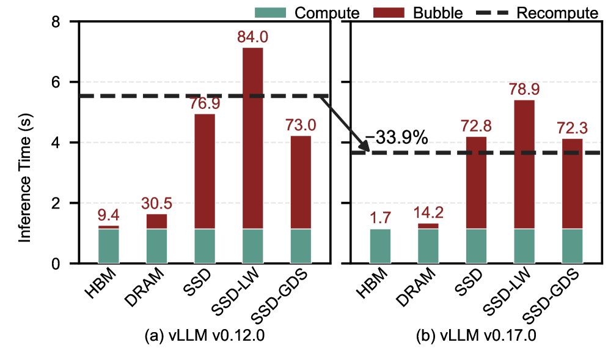
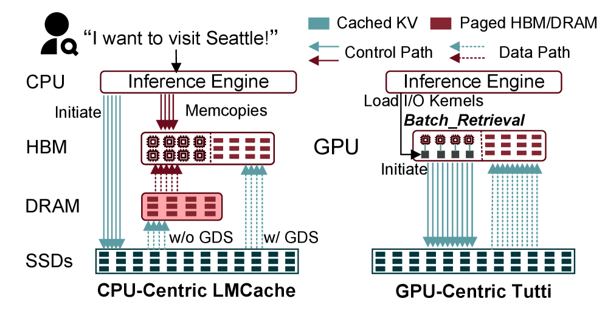
GPU File Pool + P2P Mapping Table，对齐 KV Cache 语义，SGL 代替 PRP 减少 HBM 开销
零拷贝 ring buffer，GPU 侧异步 I/O 提交/完成，SM 分区隔离
离线 profile 窗口 + 读写分离调度，避免带宽冲突和 SM 争抢
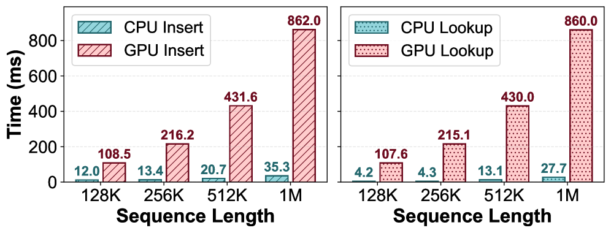
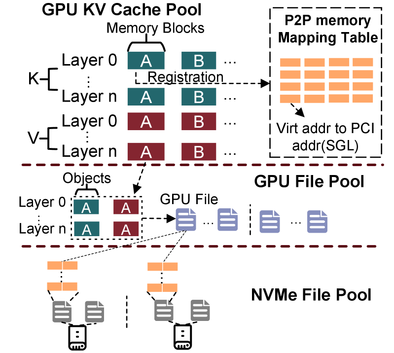
60 GB KV Cache → PRP 需要 3.75 GB HBM 用于地址映射
PRP 命令需要大量 descriptor，单线程读写带宽极低
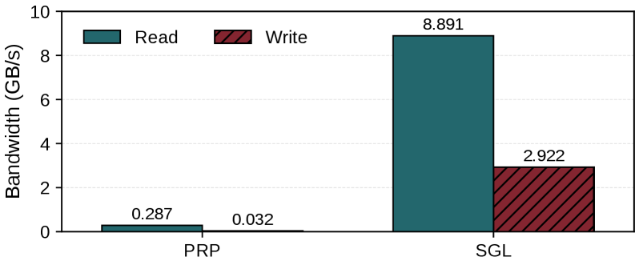
io_uring，完全在 GPU 侧运作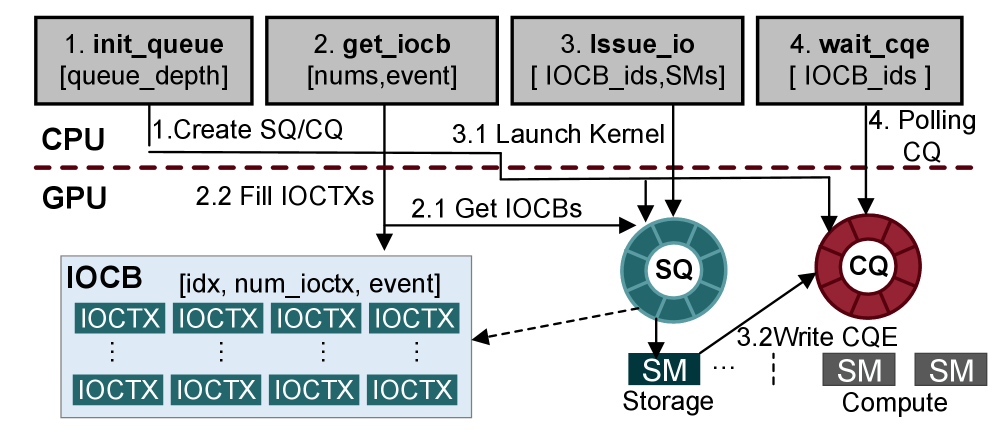
并发 R/W 总带宽 下降 60%（NVMe 内部缓存竞争）
长 I/O kernel 阻塞 compute kernel（非抢占式调度）
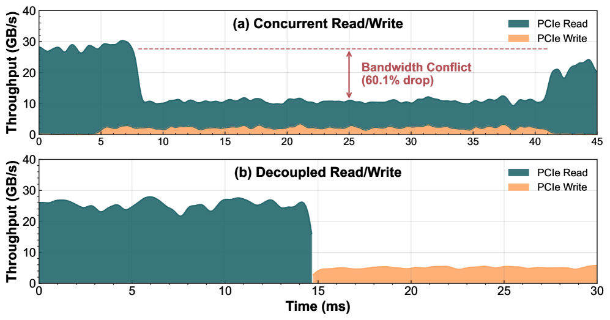
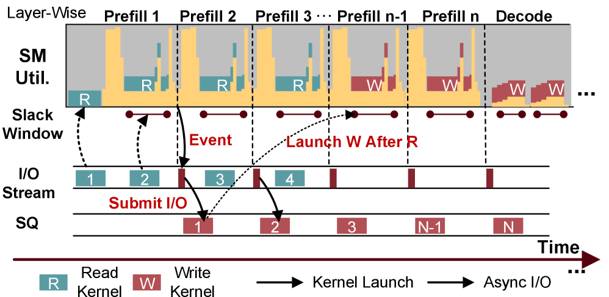
| 层级 | 容量 | LEval | LooGLE |
|---|---|---|---|
| HBM | 80 GB | 8% | 4% |
| DRAM | 256 GB | 53% | 24% |
| SSD (Tutti) | 14 TB | 84% | 86% |
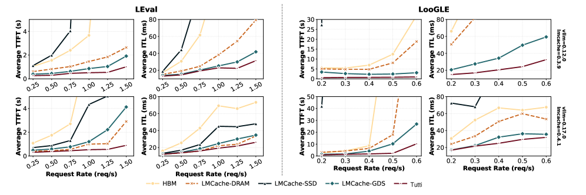
本图展示了在不同请求率（RPS）下，4种方案在 LEval 和 LooGLE 两个长上下文 benchmark 上的 TTFT 和 ITL。横轴为请求率，纵轴为延迟。包含 vLLM v0.12.0（旧版）和 v0.17.0（新版，计算优化更强）两组对比。
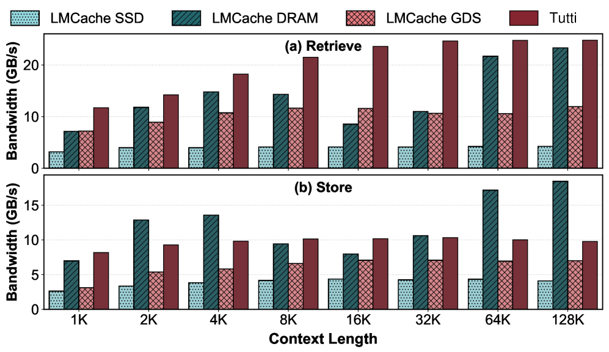
本图为存储子系统微基准测试，绕过模型执行，直接测试 Retrieve（读取）和 Store（写入）的原始带宽。横轴为上下文长度（tokens），纵轴为带宽（GB/s）。
论文通过多组消融实验验证各设计组件的贡献：TTFT vs. 前缀复用、PRP vs. SGL、分布式扩展、延迟分解与成本分析
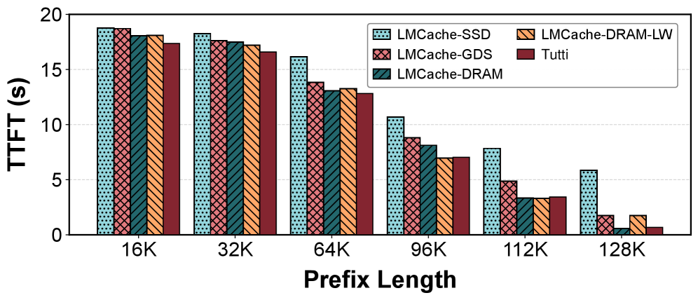
固定输入总长度 = 128K tokens，逐步增加缓存前缀长度（16K → 128K），观察 TTFT 变化。前缀越长 → 需要从存储读取的 KV 数据越多 → I/O 负载越大。
Tutti 的 I/O-compute 重叠效果极佳，使得 SSD 在大多数场景下接近甚至超越 DRAM 的感知性能。曲线平缓上升而非陡峭，证明带宽利用率高、I/O 调度有效。
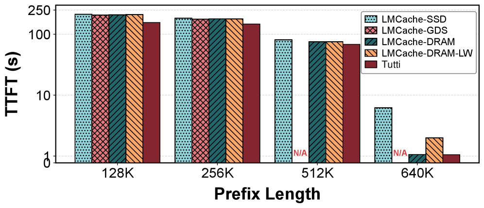
GLM-4-9B-Chat-1M 模型，2 张 H100（NVLink 互联），4 块 SSD。横轴为前缀长度（128K → 640K），纵轴为 TTFT（对数坐标）。
cufile 需要分配 GPU 显存作为 staging buffer，长上下文下 staging buffer 超出可用 HBM，触发 OOM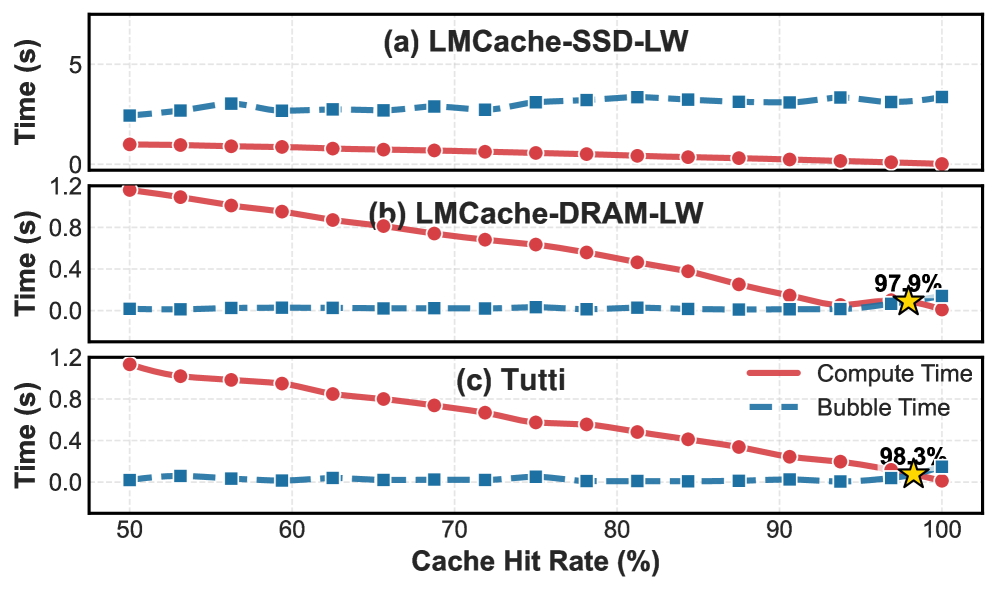
固定 prompt 长度 32K，改变 cache hit rate（20% → 100%），将推理延迟分解为 Compute Time（有颜色）和 Bubble Time（蓝色虚线）。横轴为 cache hit rate，纵轴为时间。
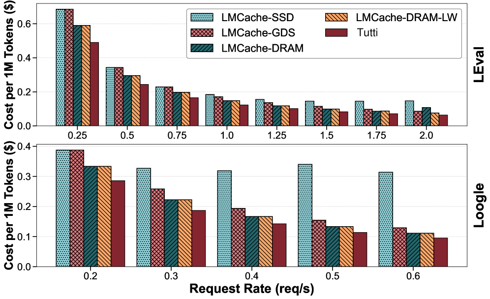
Cost = (GPU Cost + DRAM Cost + SSD Cost) / Throughput。采用云定价：H100 $5/h，DRAM $0.0088/GB/h，SSD $0.000082/GB/h（SSD 比 DRAM 便宜约 100 倍）。
端到端性能、消融实验、成本分析核心数据一览
| 实验 | 指标 | Tutti | vs GDS | vs DRAM | vs SSD |
|---|---|---|---|---|---|
| 端到端性能 (LEval, v0.17.0) |
TTFT（高负载） | 最优 | ↓78.3% | ↓69.1% | ↓>90% |
| ITL（1.5 RPS） | 最优 | ↓24.4% | ↓22.0% | — | |
| 有效请求率（1s SLO） | 最高 | 2× | 1.5× | — | |
| 原始带宽 | Retrieve（128K） | 25.9 GB/s | 2.08× | — | — |
| PRP vs SGL | Read / Write | SGL | Read 31× / Write 91× | （SGL 相对 PRP） | |
| 前缀复用 | TTFT @112K prefix | 3.43s | ↓61.4% | ↑20.6% | ↓2.28× |
| 分布式扩展 | TTFT @640K prefix | 1.2s | OOM失败 | — | — |
| 延迟分解 | Crossover Point | 98.3% | N/A | 97.9% | ~50% |
| 推理成本 | LEval @1.5 RPS | ~$0.25/M | ↓30% | ↓31% | ↓52% |
| LooGLE @0.5 RPS | 最低 | ↓27% | — | ↓66% | |